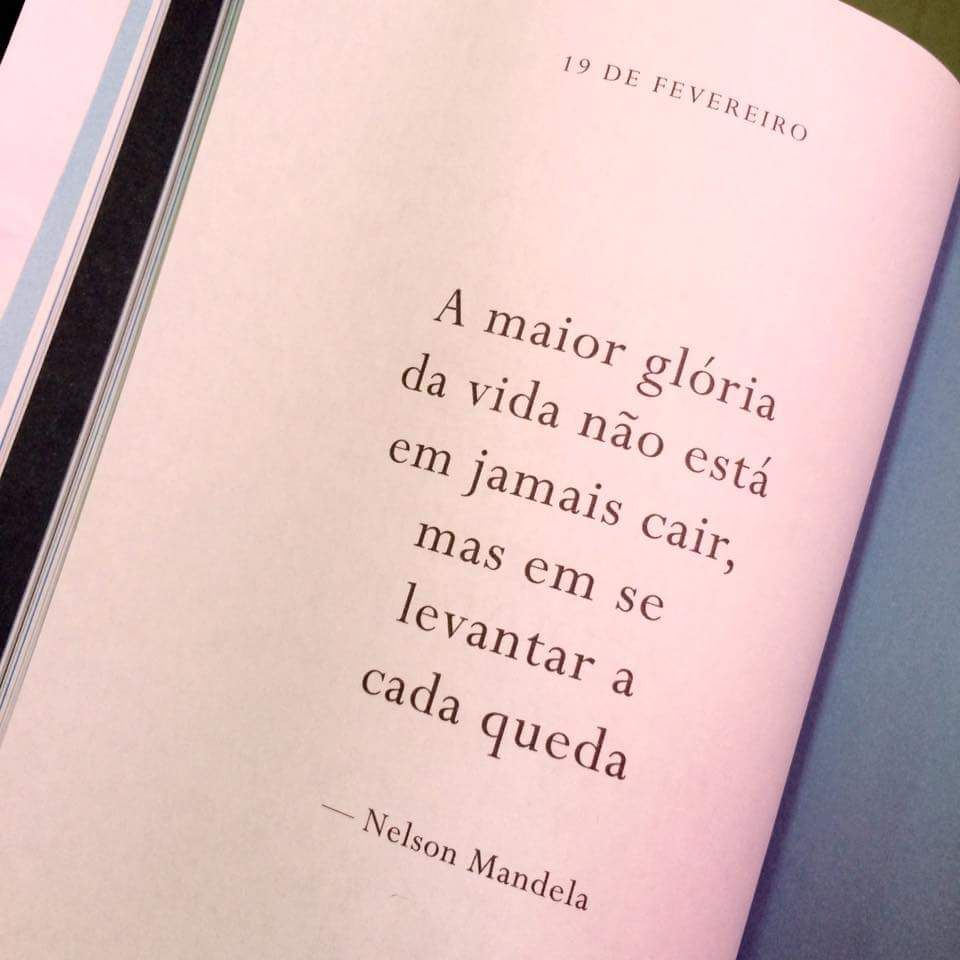
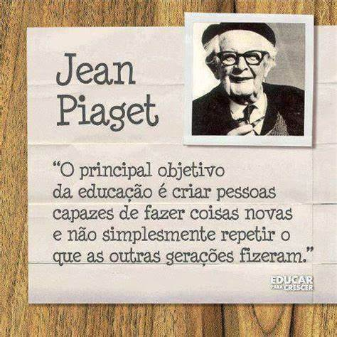
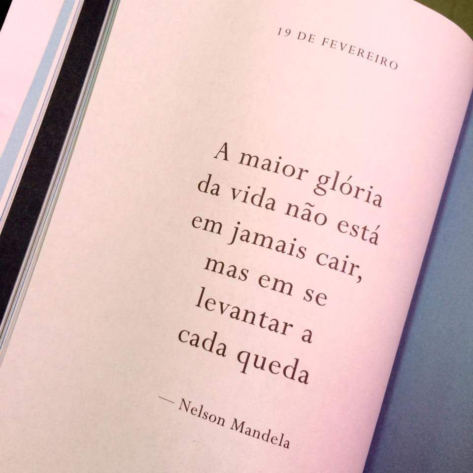
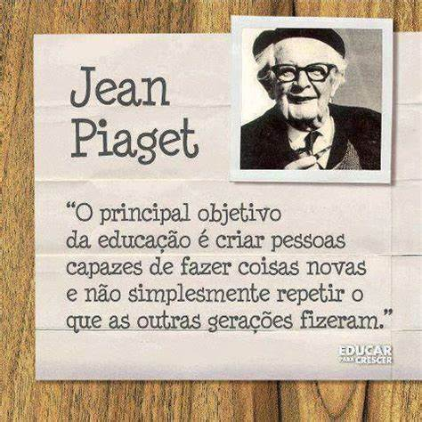

Entre Linhas e Letras
Downloads de Livros
Aqui você pode baixar alguns dos nossos livros favoritos:
Vídeo Relacionado
Confira este vídeo interessante sobre literatura
Edição, reimpressão, adaptação, o que é cada um?
A Magia da Leitura
"Envolva-se em Cada História"
Ler livros é uma experiência verdadeiramente mágica. Cada página vira uma porta para novos mundos, personagens e aventuras. Ao nos envolvermos em cada história, somos transportados para lugares distantes, vivemos emoções intensas e aprendemos lições valiosas. A leitura nos permite escapar da rotina, expandir nossos horizontes e ver o mundo sob diferentes perspectivas. É um convite constante à imaginação e ao conhecimento, onde cada livro lido enriquece nossa alma e nos conecta profundamente com a essência humana.
Tabela de Livros Recomendados
| Título | Autor | Gênero | Ano |
|---|---|---|---|
| Tudo é Rio | Carla Madeira | Romance | 2014 |
| Leitura de Verão | Emily Henry | Romance | 2022 |
| Tudo o que eu sei sobre o amor | Dolly Alderton | Memórias | 2022 |
| Biblioteca da Meia-Noite | Matt Haig | Ficção | 2013 |
| Memórias Póstumas de Brás Cubas | Machado de Assis | Romance | 1881 |
| A cor Púrpura | Alice Walker | Romance | 1982 |
| Mais Esperto Que o Diabo | Napoleon Hill | Autoajuda | 1938 |
Citações
.jpeg) 



.jpeg)